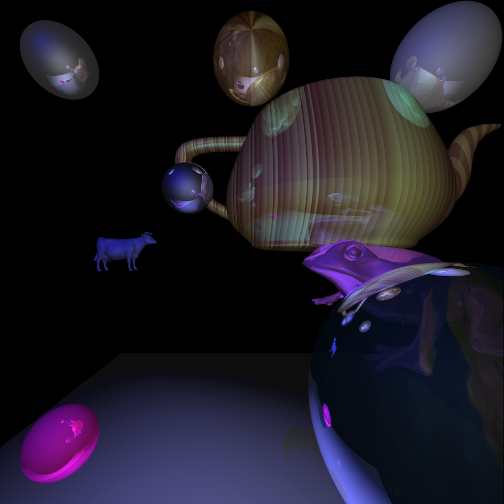
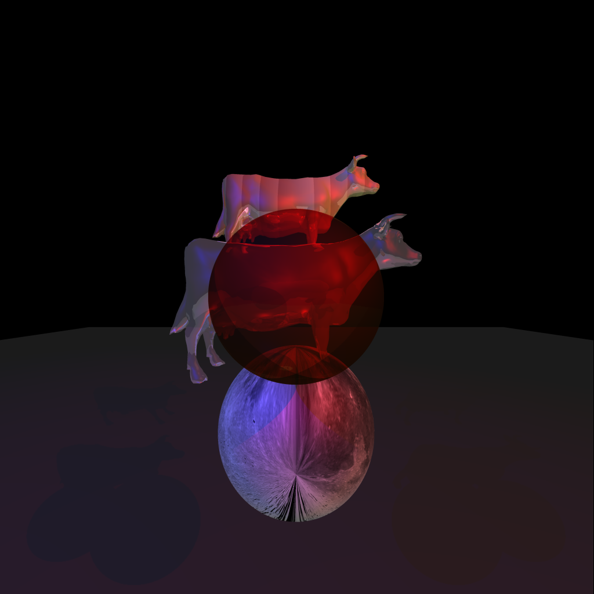
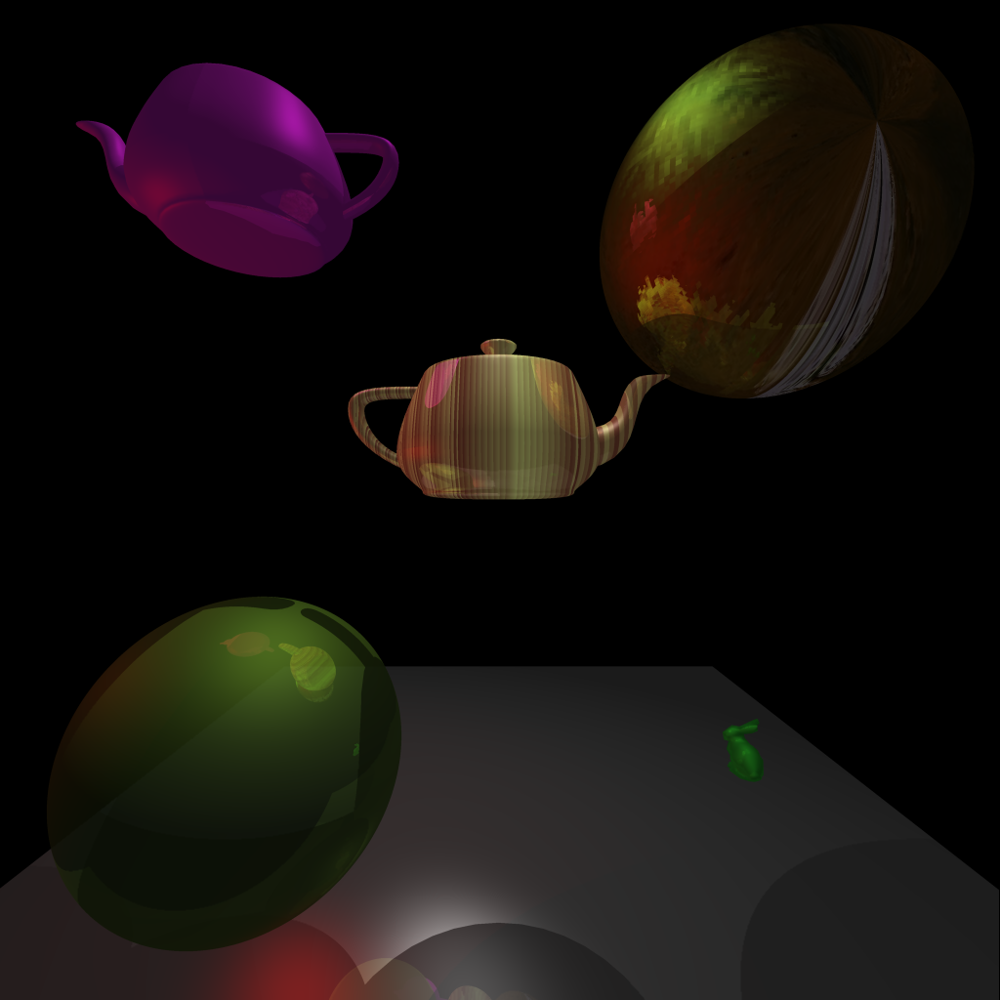

Input file: first_input.txt
This image satisfies the specifications from the instructions.
Jupiter is mapped onto the center top sphere, the earth is mapped to the translucent one in the bottom right, and there is a sort of periodic texture mapped onto the teapot that has Perlin noise involved.
It took 29.655 seconds to generate this image.

Input file: second_input.txt
It took 25.219 seconds to generate this image.

Input file: third_input.txt
This includes my attempt at bump mapping, as you can see it isn't really working. I think I'm closeish but I'm pretty tired and running out of steam so don't think I'll fix it by midnight. I decided to start by using the bump map images from the slides instead of a real function and that's probably at least partially why it isn't working.
It took 6.211 seconds to generate this image.